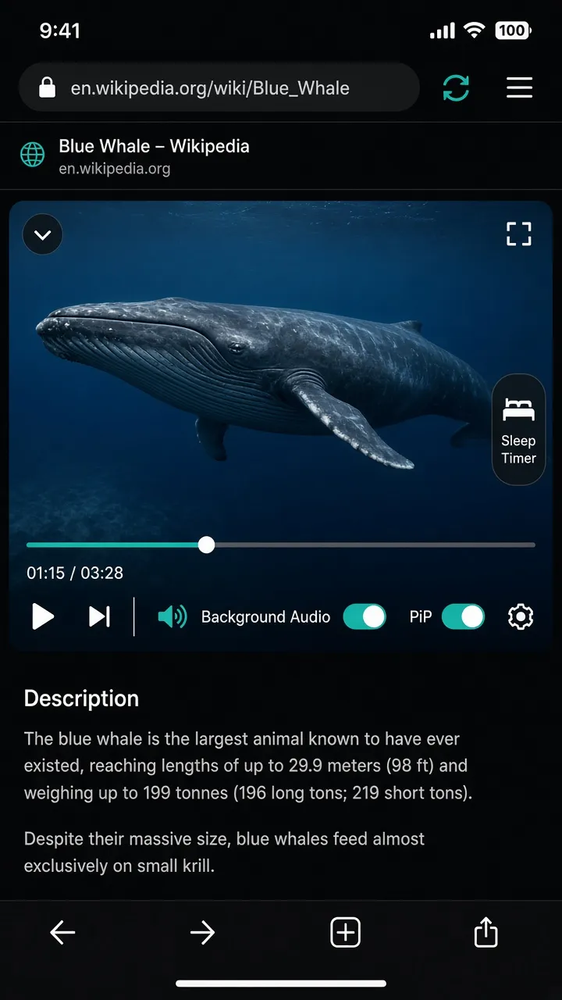

Tracker blocking & cleaner pages
Block known ad and tracker requests and hide common banners. The address-bar shield shows protection is on. Filter lists can update when sites change. XBrowser itself does not monetize with in-app ads.


Keep identities apart. Block trackers. Lock what matters. One browser for private browsing and separate logins—without mixing cookies or selling your attention with in-app ads.
Core product
Built for people who want browsing data to stay on-device, trackers reduced, and sensitive Spaces locked—without an ad-funded chrome.
Block known ad and tracker requests and hide common banners. The address-bar shield shows protection is on. Filter lists can update when sites change. XBrowser itself does not monetize with in-app ads.
Protect a Space with PIN, pattern, or Face ID / Touch ID. Add Second Lock—a secondary App Lock code that opens a decoy session where locked Spaces stay completely hidden.

Each Space is a separate browsing identity. Cookies, cache, history, and bookmarks stay with that Space—so messaging, shops, and work never collide.
Run multiple WhatsApp Web, Instagram, Telegram, Facebook, shop, or work sessions side by side. One browser, many identities—switch in one tap without logging out.
Cross-border sellers and multi-brand operators: give each store its own Space. Keep a dedicated work Space for email and docs. History and home follow the identity you are in.

How it works
Spaces isolate identities. Locks and tracker blocking protect them. Everything else is optional tooling on top.
Live demo
Watch Personal → Work → Shop in a loop. Each Space keeps its own cookies and logins—no logout, no clone app, no mixed history.
Add Messaging, Shop, Work, or a custom identity. Each gets its own cookies and site data.
History and bookmarks stay local to the Space. Turn on tracker blocking; lock Spaces that should stay out of sight.
Tap the Space chip to jump identities. Sessions stay put until you delete the Space.
Space separation does not change your network IP or make you anonymous online. XBrowser focuses on practical session isolation, tracker reduction, and local data control.
Also in XBrowser
Media, capture, Split View, and editors—useful extras that sit on top of privacy Spaces.
Floating window, fullscreen controls, Picture in Picture, and Background Audio for supported streams—so web video can continue after lock or leaving the app.

Dual WhatsApp, multi-shop sellers, work/personal split, session isolation—long-tail pages for real searches.
Browse use cases →Two panes at once, each bound to a different Space—dual WhatsApp or dual YouTube without cookie mix-ups.
Split View details →Pick page elements to hide or edit text. Rules can apply to this page or the whole site.
Web Editor details →Save videos and pages to a per-Space library—personal and work queues stay separate.
Watch Later details →Capture the viewport, then crop and annotate in the built-in editor.
Screenshot details →Stitch a tall scrolling page into one image—articles, chats, and long lists.
Long screenshot details →Auto-stop media with a gentle fade—pairs with the built-in player and Background Audio.
Sleep Timer →A secondary App Lock code opens a decoy session—locked Spaces and lock settings stay hidden.
Second Lock details →No in-app ads as monetization—Premium funds unlimited Spaces and Space Lock.
Ad-free details →Reviews & FAQ
Separate logins, locked Spaces, and fewer trackers—the reasons people open XBrowser.
“Three shop accounts, three Spaces. Cookies don’t mix. Way better than logging in and out.”
“Two WhatsApp Web sessions side by side. Switch with the Space chip—no more wrong-chat mistakes.”
Yes—in the practical sense: local Space data, tracker blocking, optional Space Lock / Second Lock, and no in-app ad monetization. It does not change your IP or guarantee anonymity on the open web.
A Space is an isolated browsing identity. It has its own cookies, site data, history, bookmarks, and tabs—so accounts do not mix.
Each Space is backed by its own WebKit data store—Apple’s WKWebsiteDataStore with a unique identifier. Cookies, cache, and local storage for that Space live only in that store. Switching Spaces switches which store the web view uses. It is real session isolation, not a cosmetic “profile” label on a shared cookie jar.
Incognito usually means a temporary, non-persistent store: close the private tabs and the session is gone. That is great for a one-off visit, but you cannot keep two long-lived logins side by side. Spaces are persistent sandboxes—each account stays signed in until you clear that Space, and switching does not overwrite the other Space’s cookies.
Incognito is “forget me when I leave.” Spaces are “remember each identity separately.” That is what dual WhatsApp Web, two Gmail inboxes, or Shop A vs Shop B need—without logging out every time or relying on unsafe third-party “clone” apps.
Free includes up to 3 Spaces. Unlimited Spaces and Space Lock need Premium. See Pricing.
No. Spaces isolate cookies and logins on your device. They do not change your network IP or make you anonymous online.
Yes. Space Lock (Premium) can protect a single Space with PIN, pattern, or biometrics while other Spaces stay unlocked.
No. XBrowser does not monetize with in-app ads. Built-in blocking reduces many web ads and trackers (best-effort). See Ad & tracker blocking.
Yes—for supported streams, the built-in player offers Background Audio, floating playback, and Picture in Picture. See Built-in player.
XBrowser is a product of XBrowser International Limited. Support: support@xxxxxbrowser.cc.
Create your first Space, turn on tracker blocking, and lock what matters—in minutes.